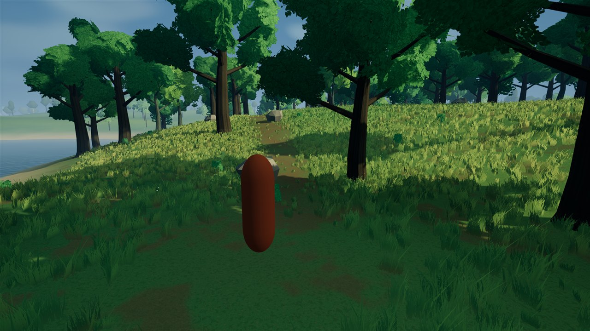
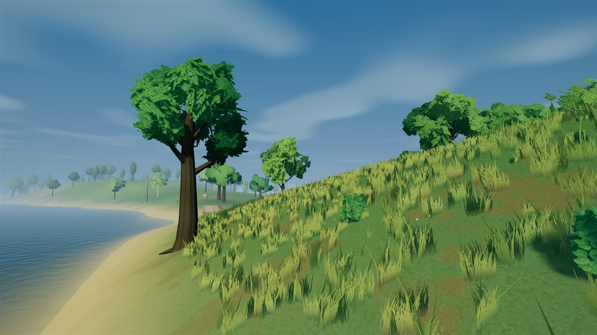
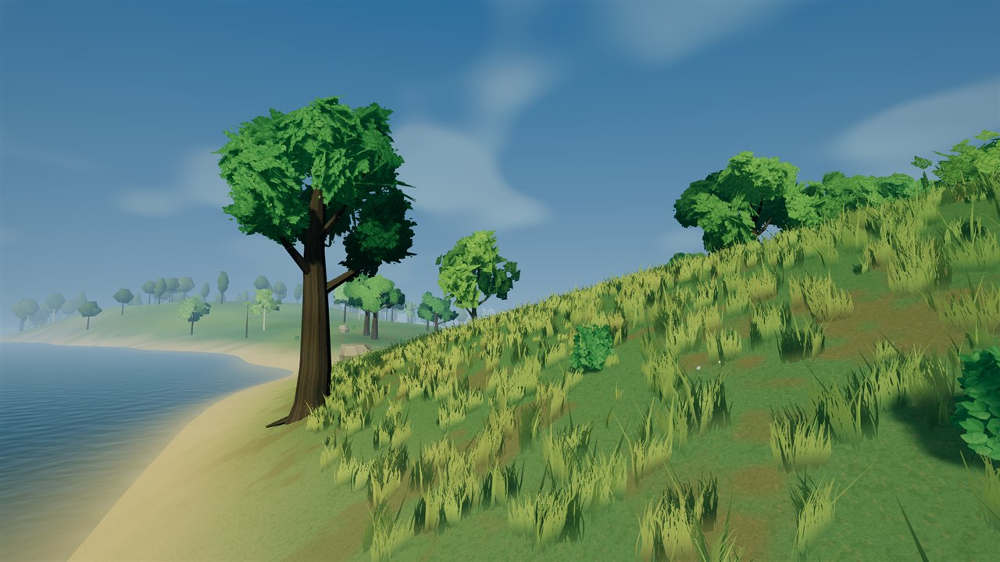
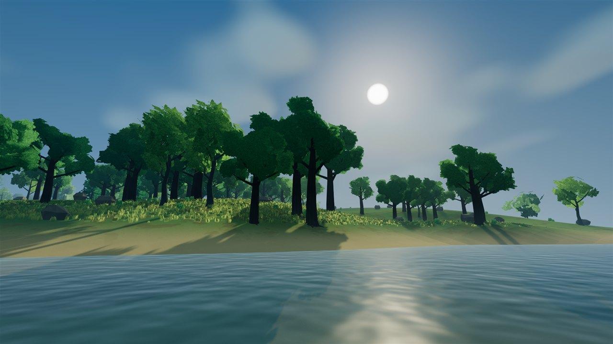
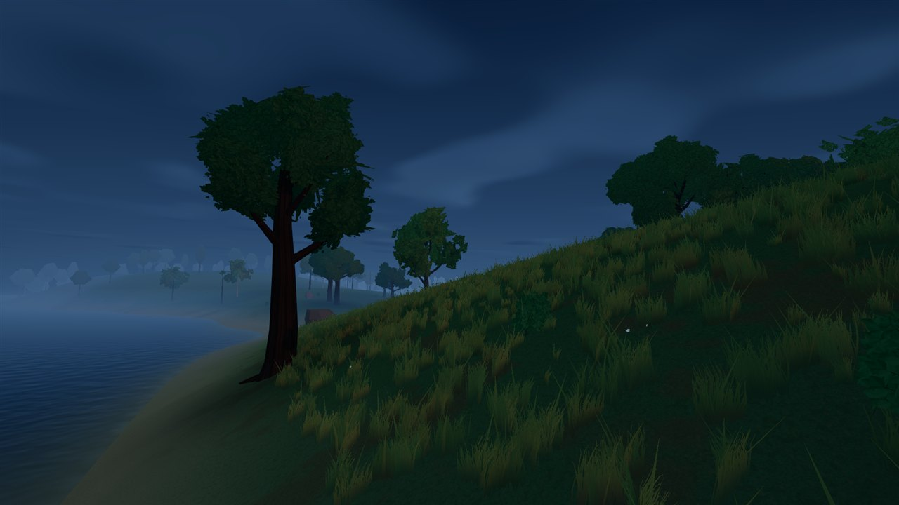
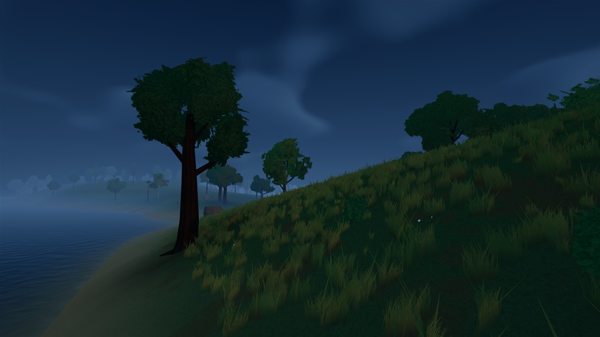
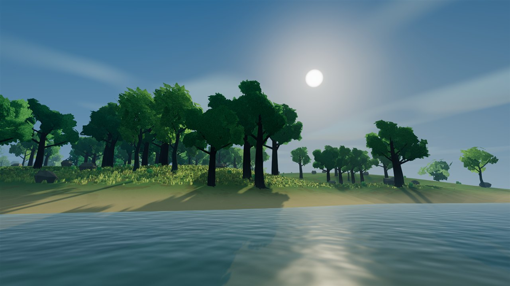
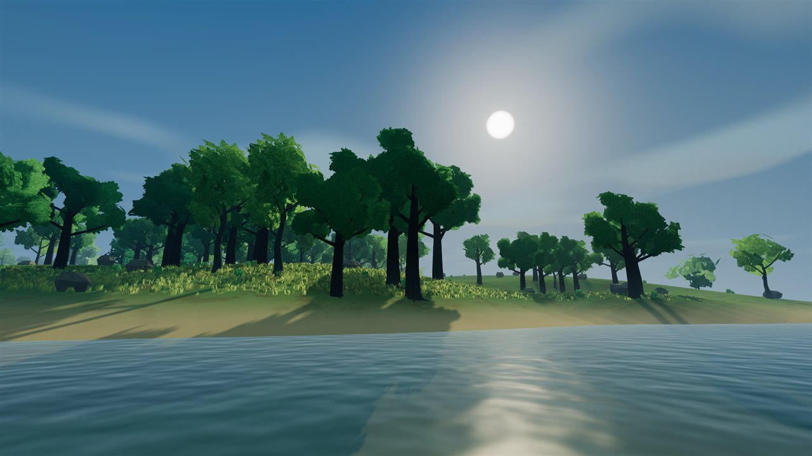
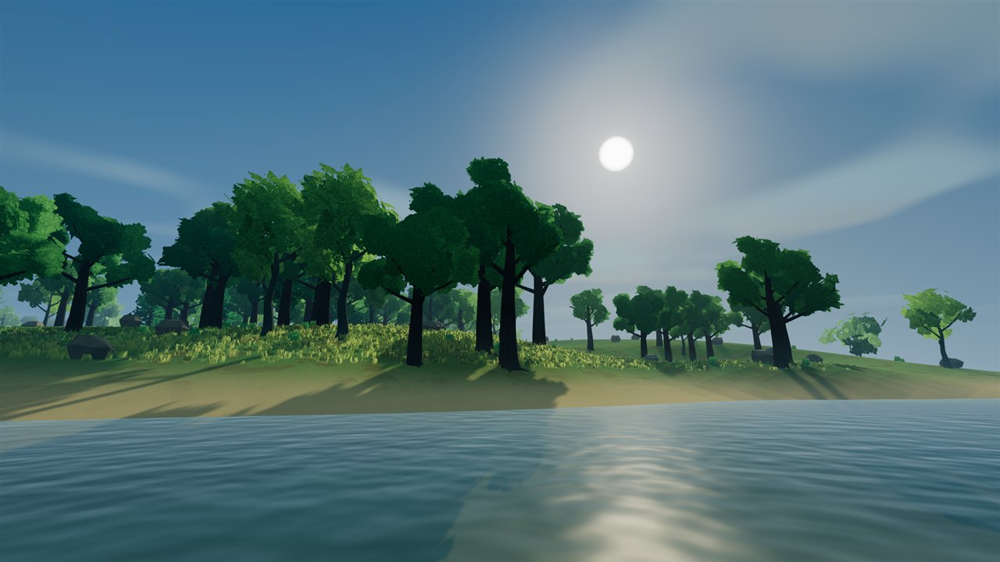

DAY / DUSK / SHORELINE
Clouds that shape the sunlight.
Sky clouds and surface shadows now sample one moving world-space field. Soft attenuation varies direct sunlight across terrain, grass, trees and water highlights while ambient light remains unchanged. This is an approximate thin cloud layer, not volumetric clouds or a weather simulation.
After images appear first. Tap any image for its full-resolution original. Low-sun fading keeps the shadow projection bounded; clouds do not darken local lights. This website contains screenshots, not a playable mobile game. The previous water comparisons remain available.
NORMAL GAME / CLOUD COMPARISON
Day / ordinary player camera


NORMAL GAME / CLOUD COMPARISON
Day / shoreline


NORMAL GAME / CLOUD COMPARISON
Day / distant coast


NORMAL GAME / CLOUD COMPARISON
Dusk / shoreline


FIXED CAMERA / SAMPLED PHASES
Cloud shade across the ridge
Three still samples at study times 2, 62 and 122 seconds show the cloud field at different positions. Grass and water animation also advance with the shared clock. These are sampled phases, not a time-lapse or video; they do not establish temporal stability or frame pacing.


